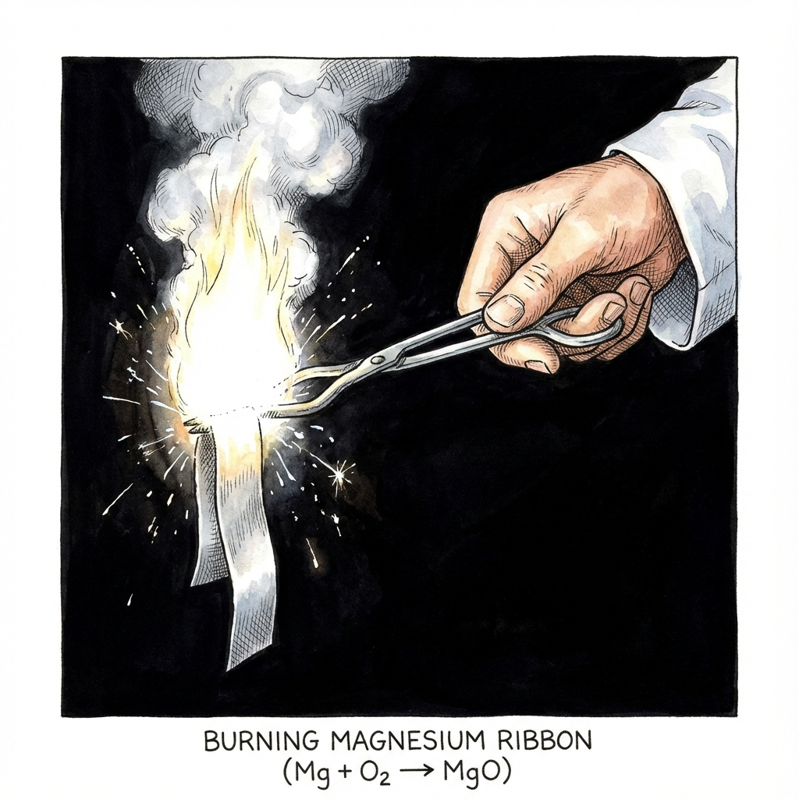
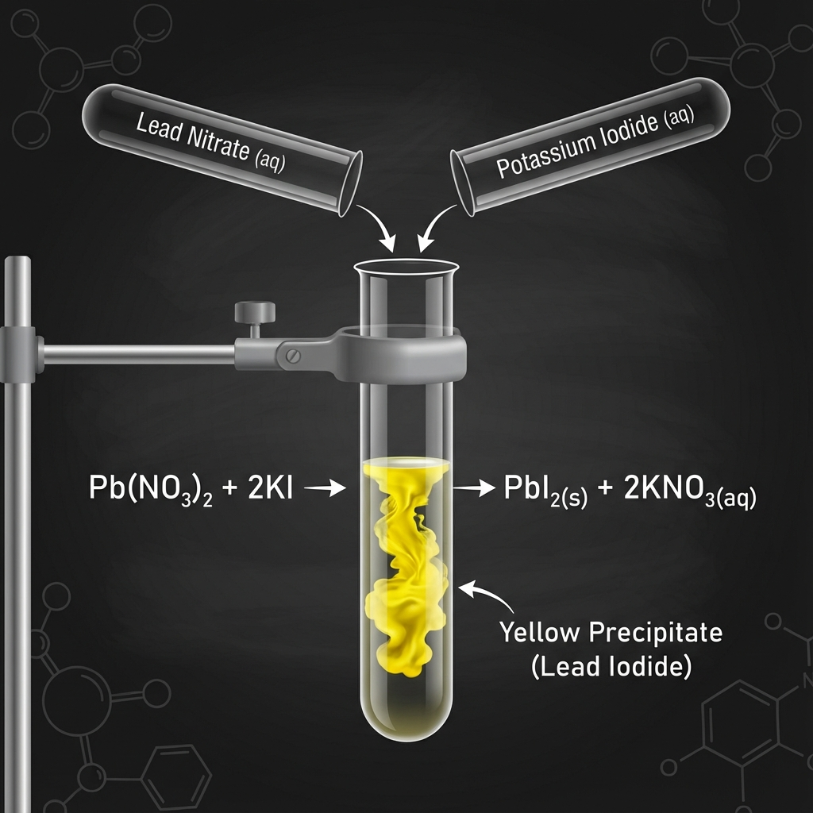
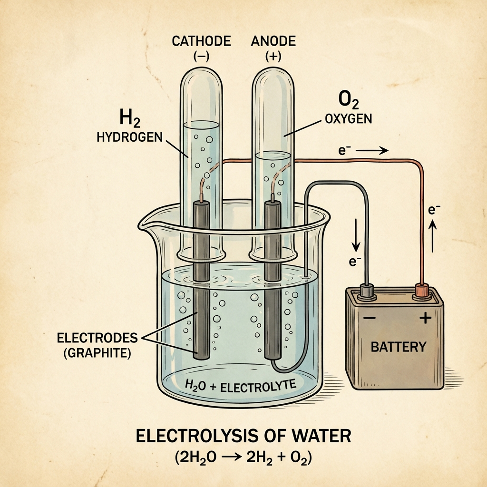
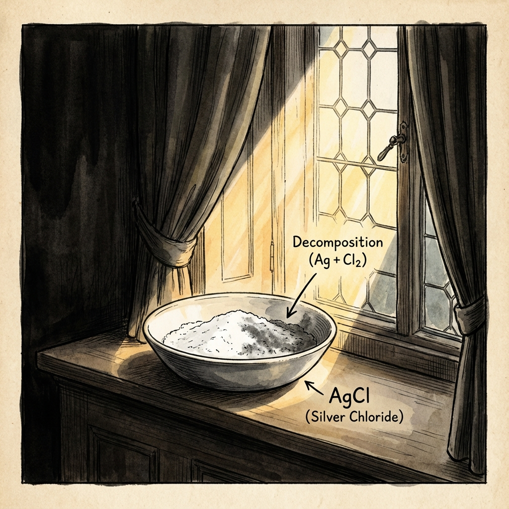
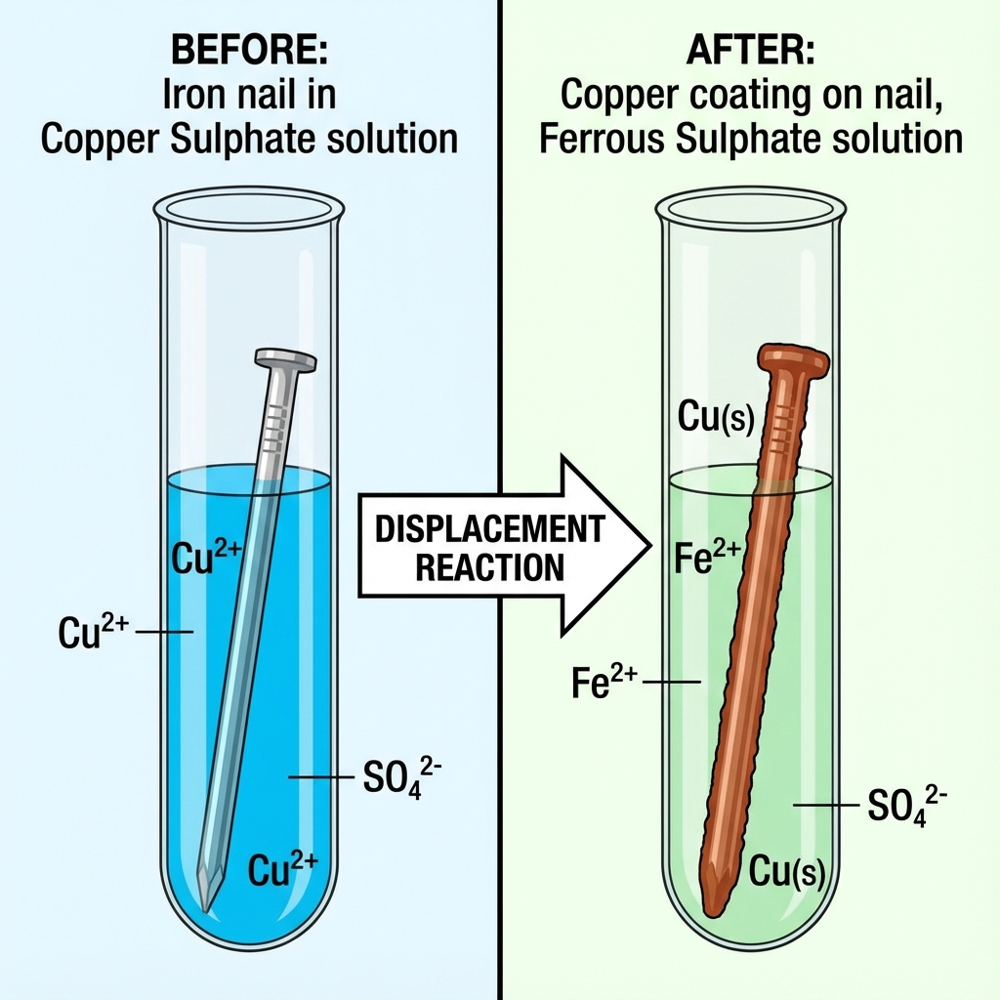

- Clean a magnesium ribbon about 2 cm long by rubbing it with sandpaper (to remove the oxide layer).
- Hold it with a pair of tongs.
- Burn it using a spirit lamp or burner.
- Collect the ash formed in a watch-glass.
Activity 1.1
Burning of Magnesium Ribbon
Aim
To study the reaction of Magnesium with Oxygen (burning in air).
Procedure

Observation & Conclusion
Magnesium burns with a dazzling white flame and changes into a white powder. This powder is Magnesium Oxide.
2Mg(s) + O2(g) → 2MgO(s)
Activity 1.2
Lead Nitrate & Potassium Iodide
Aim
To observe the reaction between Lead Nitrate and Potassium Iodide solutions.
Procedure
- Take Lead Nitrate solution in a test tube.
- Add Potassium Iodide solution to this.

Observation & Conclusion
A yellow precipitate of Lead Iodide (PbI2) is formed immediately. This is a precipitation reaction.
Pb(NO3)2(aq) + 2KI(aq) → PbI2(s) +
2KNO3(aq)
Activity 1.3
Zinc Granules & Acid
Aim
To observe the reaction of Zinc with dilute Sulphuric Acid or Hydrochloric Acid.
Procedure
- Take a few zinc granules in a conical flask.
- Add dilute Hydrochloric Acid or Sulphuric Acid.
- Touch the conical flask.

Observation & Conclusion
Bubbles of Hydrogen gas are evolved. The flask becomes hot, indicating an exothermic reaction.
Zn(s) + H2SO4(aq) → ZnSO4(aq) +
H2(g)
Activity 1.4
Formation of Slaked Lime
Aim
To observe the reaction between Calcium Oxide (Quick Lime) and Water.
Procedure
- Take a small amount of Calcium Oxide in a beaker.
- Slowly add water to it.
- Touch the beaker.
(Visual: Beaker releasing steam)
Observation & Conclusion
Calcium Oxide reacts vigorously with water to produce Calcium Hydroxide (Slaked Lime) releasing a large amount of heat (Exothermic).
CaO(s) + H2O(l) → Ca(OH)2(aq) + Heat
Activity 1.5
Heating Ferrous Sulphate
Aim
To observe the decomposition of Ferrous Sulphate crystals.
Procedure
- Take about 2g ferrous sulphate crystals in a dry boiling tube.
- Note the colour (Green).
- Heat the boiling tube over a burner.
(Visual: Green crystals turning brown)
Observation & Conclusion
The green colour changes to reddish-brown (Ferric Oxide). A characteristic smell of burning sulphur is observed (SO2 and SO3 gases).
2FeSO4(s) → Fe2O3(s) +
SO2(g) + SO3(g)
Activity 1.6
Heating Lead Nitrate
Aim
To observe the decomposition of Lead Nitrate powder.
Procedure
- Take about 2g lead nitrate powder in a boiling tube.
- Hold it with tongs and heat it over a flame.
(Visual: Brown fumes evolving)
Observation & Conclusion
Emission of brown fumes of Nitrogen Dioxide (NO2). A yellow residue of Lead Oxide (PbO) is left.
2Pb(NO3)2(s) → 2PbO(s) + 4NO2(g) +
O2(g)
Activity 1.7
Electrolysis of Water
Aim
To decompose water into Hydrogen and Oxygen using electricity.
Procedure
- Take a plastic mug, drill two holes, insert carbon electrodes.
- Fill with water, add drops of H2SO4.
- Connect to 6V battery.
- Collect gas in inverted test tubes.

Observation & Conclusion
Bubbles form at both electrodes. The volume of gas at the cathode (Hydrogen) is double that at the anode (Oxygen).
2H2O(l) → 2H2(g) + O2(g)
Activity 1.8
Silver Chloride in Sunlight
Aim
To observe the effect of sunlight on Silver Chloride.
Procedure
- Take about 2g silver chloride in a china dish.
- Place it in sunlight for some time.
- Observe the colour change.

Observation & Conclusion
White silver chloride turns grey in sunlight. This is due to the decomposition of silver chloride into silver and chlorine by light.
2AgCl(s) → 2Ag(s) + Cl2(g)
Activity 1.9
Iron Nail in Copper Sulphate
Aim
To compare the reactivity of Iron and Copper.
Procedure
- Take three iron nails and clean them.
- Take Copper Sulphate solution (blue) in a test tube.
- Dip two nails in the solution for 20 mins.

Observation & Conclusion
The blue colour of the solution fades to pale green (Ferrous Sulphate). A brownish coating (Copper) deposits on the iron nail. Iron is more reactive than Copper.
Fe(s) + CuSO4(aq) → FeSO4(aq) + Cu(s)
Activity 1.10
Double Displacement Reaction
Aim
To observe the reaction between Sodium Sulphate and Barium Chloride.
Procedure
- Take Sodium Sulphate solution in a test tube.
- Take Barium Chloride solution in another test tube.
- Mix the two solutions.
(Visual: White precipitate forming)
Observation & Conclusion
A white precipitate of Barium Sulphate is formed. This is a double displacement reaction.
Na2SO4(aq) + BaCl2(aq) →
BaSO4(s) + 2NaCl(aq)
Activity 1.11
Oxidation of Copper
Aim
To study the oxidation of copper.
Procedure
- Heat a china dish containing about 1g copper powder.
(Visual: Copper turning black)
Observation & Conclusion
The surface of copper powder becomes coated with a black substance (Copper(II) Oxide). This is because oxygen is added to copper.
2Cu + O2 → 2CuO